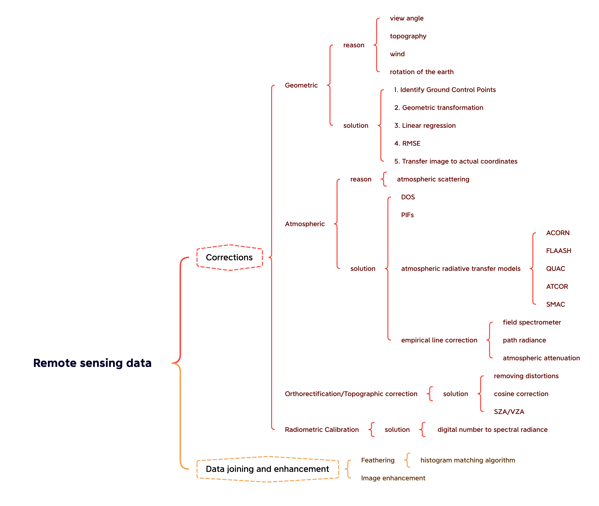

3 Diary: Remote sensing data
3.1 Summary
This week we focus on Remote Sensing Data Corrections, Joining, and Enhancement. It involve several key processes to ensure the accuracy and usability of satellite and aerial imagery. These corrections and enhancements can be broadly classified into the following categories:

Geometric Corrections: These involve correcting image distortions caused by sensor geometry, earth curvature, and platform motion. The general steps include identifying control points, selecting a suitable resampling technique, and applying a geometric transformation to correct the image.
Atmospheric Corrections: These help remove the influence of the atmosphere on the remotely sensed data. Methods include: a. Dark Object Subtraction (DOS): Assumes that the darkest pixel values in an image correspond to zero reflectance, allowing for atmospheric haze removal. b. Pseudo-Invariant Features (PIFs): Utilizes stable targets on Earth’s surface with consistent reflectance to correct for atmospheric effects. c. Atmospheric Radiative Transfer Models: Simulate the interaction of solar radiation with the Earth’s atmosphere to correct for atmospheric scattering and absorption. d. Empirical Line Correction: Relates the radiance values of ground-based measurements to the corresponding pixel values in the image to correct for atmospheric effects.
Orthorectification Correction: Involves correcting for terrain-induced geometric distortions in the image by using elevation data and projecting the image onto a map coordinate system, resulting in an orthorectified image.
Radiometric Calibration: Ensures the consistency and comparability of images by converting raw digital numbers to physical units, such as radiance or reflectance. This enables accurate comparisons between images acquired at different times and under varying conditions.
Data Joining and Enhancement: Enhances the visual quality and usability of images by merging and improving their features. Techniques include: a. Feathering: Smoothly blends adjacent images to create seamless mosaics without visible seams or discontinuities. b. Image Enhancement: Improves the visual appearance and interpretability of images using techniques such as contrast stretching, histogram equalization, and filtering.
3.2 Application
Dark Object Subtraction (DOS) Application Example: DOS has been widely used in the processing of remote sensing data, particularly in the field of land cover and land use classification. One such example is the monitoring of water quality in coastal and inland water bodies. In this context, DOS is applied to correct for atmospheric effects, particularly scattering caused by aerosols and water vapor (Chavez 1988).
Geometric Corrections Application Example: Geometric corrections are essential for various remote sensing applications, such as change detection and land cover mapping. One example is the creation of accurate and up-to-date maps for urban planning and management. In this case, geometric corrections are applied to high-resolution satellite images to ensure proper alignment with existing maps or other geospatial data. This ensures that the analysis and decision-making processes are based on accurate and consistent information (Toutin 2004).
3.3 Reflection
Remote sensing data corrections and joining are fascinating as they play a crucial role in ensuring the quality and reliability of remotely sensed data. What’s interesting is how these processes address the inherent challenges and limitations of satellite and aerial imagery, such as distortions, atmospheric interference, and inconsistencies between different datasets. The data and tools used for corrections and joining will continue to be useful in the future for several reasons:
Growing demand for accurate geospatial data: As remote sensing technology advances and more satellites are launched, there will be an increasing need for accurate and consistent geospatial data to support various applications, including urban planning, disaster management, and environmental monitoring.
Integration of diverse data sources: Remote sensing data corrections and joining techniques will be crucial in integrating data from various sensors and platforms, ensuring seamless data fusion and enhancing the overall value of the information derived from these sources.
Improved algorithms and computational capabilities: Advancements in algorithms, artificial intelligence, and computing power will enable more sophisticated and efficient data correction and joining techniques, leading to higher-quality remote sensing data products.
Evolution of sensors and platforms: As sensors and platforms evolve, there may be new types of distortions, artifacts, or inconsistencies that need to be addressed. Remote sensing data corrections and joining techniques will have to adapt and expand to cater to these changes.
While remote sensing data corrections and joining techniques are expected to remain useful, there may be limitations in their current form. For instance, some methods might not be applicable to new sensors or data types, requiring further research and development. Additionally, as the volume of remote sensing data grows exponentially, more efficient and automated techniques will be required to process and manage these datasets. In this context, the development of new tools and approaches, potentially leveraging artificial intelligence and machine learning, could be essential to keep up with future demands.